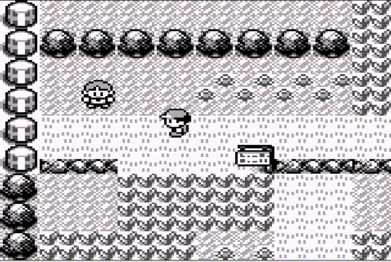
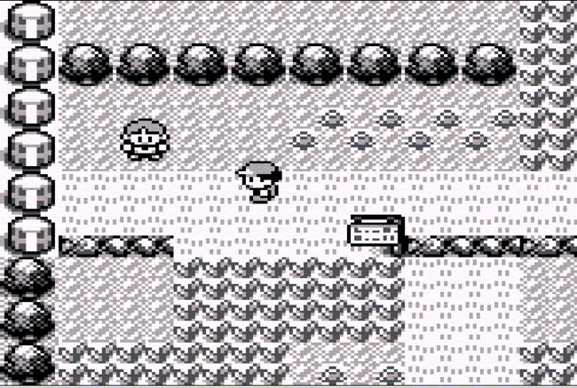

Pokémon Red & Blue (1996) – ¡Atrápalos a todos!
Jugabilidad
RPG por turnos centrado en capturar, entrenar y combatir con criaturas llamadas Pokémon. Combina estrategia, exploración y colección. El comercio entre jugadores a través del cable link añadió un fuerte componente social.
Gráficos
Gráficos simples en blanco y negro, pero con diseños de criaturas memorables. Cada Pokémon tenía una identidad visual clara, y los mapas eran funcionales y fáciles de recorrer.
Historia
Eres un joven entrenador que viaja por la región de Kanto para capturar Pokémon, derrotar líderes de gimnasio y enfrentarse a la organización criminal Team Rocket. Una historia de superación y aventura con libertad de elección.
Legado en la industria
* Inició una de las franquicias más exitosas de todos los tiempos.
* Popularizó el juego portátil y la conectividad entre consolas.
* Generó una cultura global con anime, cartas, juguetes y más.
* Inspiró generaciones de juegos de colección y combate por turnos.